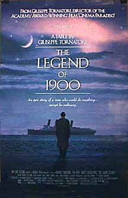

Contents | Features | Reviews | Books | Archives | Store |
 |
|
| Movie Credits | Buy It! |
Legend of 1900
Review by
Gregory Avery
Posted 23 November 1999
|  |
Directed
by Giuseppi Tornatore. Starring
Tim Roth, Screenplay
by Giuseppi Tornatore, |
In
The Legend of 1900, the latest film by Italian director Giuseppi
Tornatore (who did Cinema Paradiso) and his first in English, Tim Roth,
acting with great charm and grace, plays Danny, who has spent his entire life,
during the first part of the twentieth century, living onboard a great ocean
liner traveling back and forth between Europe and the United States. A naturally
gifted pianist, Danny sits down at the piano in the ship's grand ballroom and
plays gorgeous, extemporaneous compositions (actually provided by the great film
composer Ennio Morricone) that stop everyone dead. With no official record of
his birth, though, Danny's only proof of existence is through his music. His
first, and only, acetate recording is made when he sits down to play and spots a
young female passenger (Mélanie Thierry) for the first time, instantly falling
in love.
Tornatore's
film has had almost an hour shorn from its length, and a few words from its
title (originally The Legend of the Pianist on the Ocean which is almost
as awkward as the current title, but in some ways more preferable), since it
premiered in Italy in the fall of 1997. The film has some fine lyrical moments,
great and small -- Danny performing on a free-moving piano during an ocean
storm; a musical showdown between him and Jelly Roll Morton (played, rather
portentously, by Clarence Williams III); passengers catching sight of the Statue
of Liberty for the first time -- but, in other ways, it's terribly tiny. Danny,
meant to represent the rollicking essence of the new century, is spirited
without being adventurous. The enormity of life on land is too much for him; he
prefers the surety and containment of a piano keyboard, which always has the
same number of keys every time you sit down at it, and of life onboard-ship. But
the story never really puts him to the test; we can only take his word that he
can only live his life on the ocean, and while Roth plays Danny with tremendous
feeling, his self-imposed existence seems more like a narrative device rather
than something which takes on any greater, tragic proportions.
The film also suggests that whatever was good and glorious about the twentieth century took flight around the 1950s. This is an observation that, despite the film's often charming quality, seems either terribly naive or tremendously sad.
Contents | Features | Reviews
| Books | Archives | Store
Copyright © 1999 by Nitrate Productions, Inc. All
Rights Reserved.